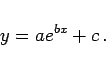
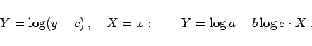
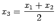
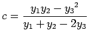

Inhalt Index DeskTop Bronstein

 Funktionen und ihre Darstellung Aufstellung empirischer Kurven Gebräuchlichste empirische Formeln Exponentialfunktionen
Funktionen und ihre Darstellung Aufstellung empirischer Kurven Gebräuchlichste empirische Formeln Exponentialfunktionen


|  | (2.247a) |
Hier handelt es sich um die gleichen Kurven wie für die Exponentialfunktion y=aebx (2.246a) des vorangegangenen Abschnitts, aber in y-Richtung um c verschoben.
Es wird c bestimmt und durch Logarithmieren rektifiziert gemäß
|  | (2.247b) |
Zur Bestimmung von c werden drei Punkte mit den Abszissen- und Ordinatenwerten x1,x2 beliebig,  und y1,y2,y3 gewählt, so daß  gilt. Nach der Bestimmung von a,b kann c nachträglich als Mittelwert der Größen y-aebx erneut bestimmt werden.